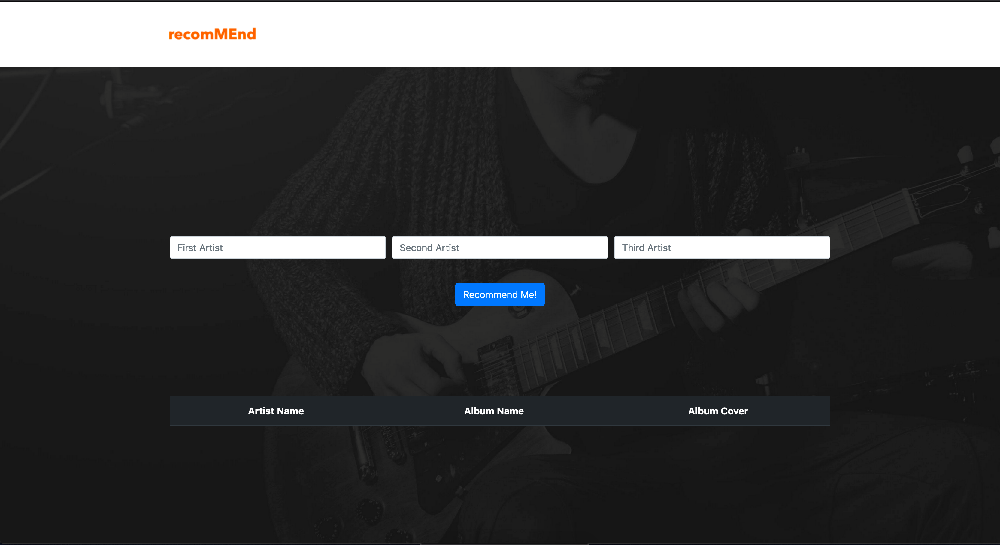

How to Use?
In order to use this tool you must clone the git repository. Unzip the server.zip file and browse into that directory. Run the server.py file which will serve a webpage on port 5000. In a web browser go to http://localhost:5000 and you will see a page that looks like this:
Simply input three artists you enjoy and the system will recommend up to 9 artists and their top albums that link to the Last.FM site for that album for you to experience and hopefully enjoy.